WHITE MAGIC ART STUDIO
第二十三章
赴約
一天前・文祿的廟
廟裡的香煙緩緩升起。
鄭文祿坐在木椅上，指尖輕敲著扶手，打量眼前的梁晉輝。
「我會照我剛剛所說的，把消息放給那個玩火的傢伙。」
他停了一下。
「只不過，你打算怎麼做？」
晉輝沒有回答。
「單挑他？」文祿嗤笑一聲，「你可別忘了，你是木之聖術師。跟那種玩火的傢伙正面交手，你能有多少勝算？」
「我很清楚自己的劣勢。」
晉輝的聲音平穩。
「但至少，我能拖住他的腳步。」
「拖到什麼時候？」
文祿瞇起眼睛。
「拖到你死的那一刻？」
晉輝沉默了。
文祿看了他一會兒，忽然嘆了口氣。
「唉……梁晉輝啊。」
他站起身，走向一旁的櫃子。
「你要是真的死了，誰來幫我找女兒？」
櫃門打開。
文祿從裡頭取出一件被深色布料包裹的物品，隨手拋向晉輝。
晉輝伸手接住。
布料滑落，露出一枚細長的冰晶。
晶體通透，內部卻隱隱流動著淡藍色的光澤。即使沒有施術，仍有一股寒意從掌心滲入。
「這是……？」
「上任水翼留下的東西。」
文祿走回座位。
「別看它不起眼。那傢伙在成為魔君之前，可是火之聖術師。」
晉輝抬起眼。
「你是說……」
「沒錯。」
文祿指向那枚冰晶。
「裡頭還殘留著水之翼的力量。只要能把它送進那傢伙的心臟，就算他的火焰再強，也得乖乖凍住。」
晉輝低頭端詳冰晶。
「你從哪裡弄來的？」
「這你就別問了。」
文祿的表情難得嚴肅。
「總之，我可是花了不少代價。」
他往椅背上一靠。
「梁晉輝，我不管你打算怎麼逞英雄。」
「你最好活著把事情辦完。」
晉輝將冰晶重新包好。
「我答應過你的事，不會忘。」
「最好是。」
文祿哼了一聲。
「畢竟你這個人，忘事情的本事可不小。」
晉輝抬頭看他。
文祿卻只是移開目光，重新拿起茶杯。
「去吧。」
「別讓我白忙一場。」
現在・宜蘭某郊區
傍晚。
天空覆著一層灰雲。
廢棄的水泥建築散落在荒地之間，牆面早已斑駁，野草從裂縫中生長出來。
一陣風吹過。
破敗圍牆上的藤蔓輕輕晃動。
梁晉輝獨自坐在一塊斷裂的石墩上。
他穿著一件便於活動的深色大衣，雙手自然垂放在膝前。
右手掌心裡，握著那枚冰晶。
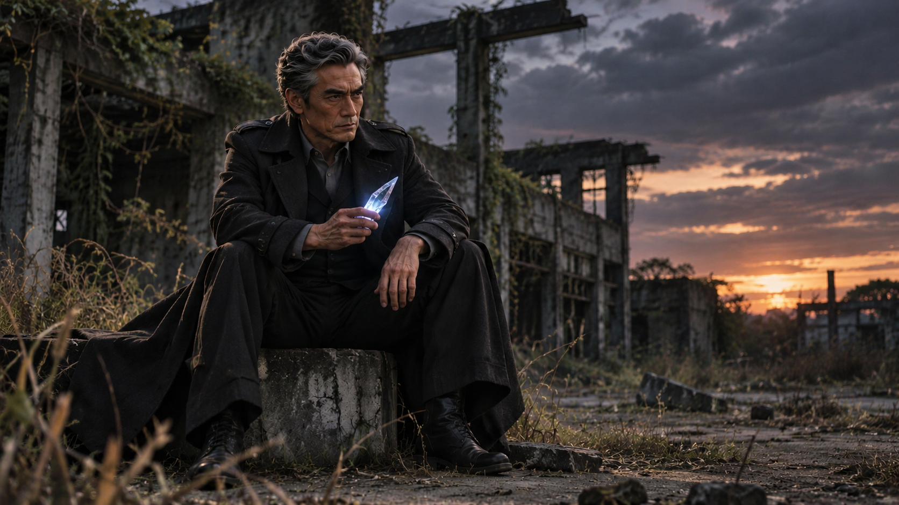
這個地方，他已經很多年沒來過了。
以前，景皓還小的時候，他經常帶著兒子到這裡練習聖術。
那孩子總是有抱不完的怨。
他想起自己有時候會要求他練到天黑，還不肯回家。
晉輝望向前方的空地。
如今，只剩下荒草與斷牆。
他緩緩收起冰晶。
就在這時——
遠方的天空忽然亮起一道紅光。
一道火焰劃破雲層，拖著長長的焰尾，朝荒地急墜而下。
轟！
地面猛地一震。
火焰向四周散開。
一道人影從火光中緩緩走出。
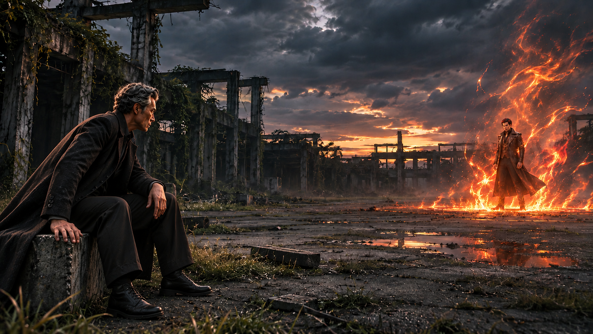
炎君。
他拍了拍肩上的灰塵，環顧四周。
「……奇怪。」
他的目光落在晉輝身上。
「你不是鄭老師吧？」
晉輝站起身。
「不是。」
「那鄭老師人呢？」
「今天找你來的人，是我。」
炎君微微挑眉。
隨後笑了。
「喔？」
「膽子不小嘛，大叔。」
他向前走了幾步。
「冒用別人的名號把我騙過來，就不怕惹錯人？」
晉輝沒有理會他的挑釁。
「至尊美麗但在哭泣的花朵啊……」
炎君的腳步停住。
晉輝繼續說道：
「你的第一顆種子，將成為我的核、我的心。」
炎君臉上的笑意慢慢消失。
「……你從哪裡聽來的？」
「你們一直在找的種子。」
晉輝望著他。
「不是梁景皓的孩子。」
炎君瞇起眼睛。
「你是……梁景皓的父親？」
「是。」
晉輝挺直身體。
「我叫梁晉輝。」
他停頓片刻。
「也是你們口中，那朵『至尊美麗的花』。」
炎君愣了一下。
隨即放聲大笑。
「哈哈哈哈！」
「不是吧？」
他抹了抹嘴角。
「你這大叔還真敢講啊！居然自己說自己是至尊？」
晉輝只是看著他。
「看來你真的不認識我。」
「怎麼？你很有名嗎？」
「聽過亞洲聖術會吧？」
炎君的笑聲稍微停了一下。
晉輝緩緩開口。
「站在你面前的，就是他們的——」
「首席至尊聖術師。」
風從兩人之間吹過。
炎君望著他。
片刻後，嘴角重新揚起。
「……有意思。」
「難怪敢一個人來。」
晉輝沒有接話。
「至於你們要找的種子……」
他的聲音低了幾分。
「是我的第一個孩子。」
炎君的眼神微微一變。
「可惜，他還沒來得及出生，就已經死在我妻子的腹中。」
晉輝望著眼前的男人。
「不是景皓。」
「更不是景皓的兒子。」
「你們要找的那顆種子，早就不存在了。」
炎君沉默了一瞬。
隨後，他仰起頭。
「哈哈哈哈哈哈！」
笑聲迴盪在廢墟之間。
「大叔。」
他重新看向晉輝。
「你覺得我會相信這種故事？」
「信不信由你。」
晉輝的神情沒有改變。
「但有一件事，你最好弄清楚。」
他的虹膜泛起淡淡綠光。
「這裡是臺灣。」
「我還沒打算放任你們在這片土地上為所欲為。」
炎君的笑容逐漸變得冰冷。
「首席至尊聖術師……」
他慢慢活動手指。
「好啊。」
「我倒想看看，你有多少本事。」
炎君飛到高處後抬起右手。
一團火焰在掌心燃起。
下一瞬，他猛然揮臂。
火光沿著荒地向外奔流，迅速繞過斷牆與廢墟。
數道火柱拔地而起。
彼此連結，形成一圈巨大的燃燒結界並且持續擴大至邊界林。
熱浪向內翻湧。
遠處的景物在高溫中微微扭曲。
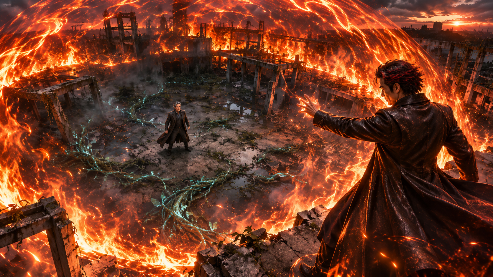
晉輝抬頭看了一眼。
「……把退路封起來了？」
「不只。」
炎君露出笑容。
「我可不喜歡打到一半，有人跑來攪局。」
「是嗎？」
晉輝收回視線。
「原來你這麼怕被圍毆啊，而且....」
晉輝指著自己的頭，
「你的記憶...好像有點混亂，需要我幫你整理整理嗎？」
炎君額角微微一動。
「……你跟你兒子一樣。」
他雙手握拳。
火焰沿著手臂燃起。
「廢話真多！」
晉輝沒有再回答。
他只是稍微側身，調整雙腳的位置。
腳下的碎石，輕輕動了一下。
炎君率先出手。
他向前踏出一步。
火焰從地面猛然竄升，化為一道寬闊的火浪，朝晉輝迎面壓來。
晉輝沒有後退。
他的左腳往旁邊挪了半步。
右手向下一按。
數條青藍色的忘憂木藤從地底竄出，沿著地面迅速交錯，將他身前的空間分成數道狹窄的縫隙。
火浪撞上藤牆。
轟！
木藤瞬間焦黑。
但就在火焰向兩側分流的剎那，晉輝已經從其中一道縫隙穿出。
炎君眼神一動。
「喔？」
晉輝沒有給他反應的時間。
他踏過一塊斷石，身體驟然加速。
轉眼間，已經逼近炎君面前。
一拳直取胸口。
炎君雙臂交叉。
砰！
沉悶的撞擊聲響起。
炎君的上半身微微後仰。
還沒站穩，晉輝已經側身轉入他的右側。
一記短促的側踢，狠狠擊中腰肋。
炎君踉蹌半步。
「你——」
話還沒出口。
晉輝的左掌已經迎面拍來。
炎君抬手格擋。
然而，就在兩人手臂接觸的瞬間，一條細藤突然從晉輝袖口竄出，纏住炎君的手腕。
炎君猛地一愣。
晉輝順勢拉近距離。
右掌擊向他的胸前。
砰！
炎君被迫退開。
腳下剛落地，數條忘憂木藤便從碎石間鑽出，纏向他的雙腿。
炎君低頭看了一眼。
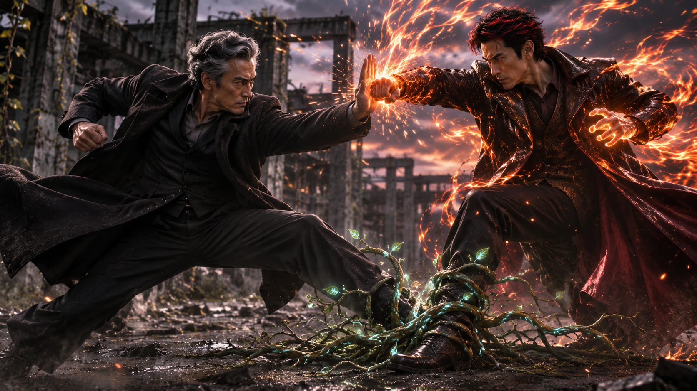
「……原來如此。」
火焰沿著腿部炸開。
藤蔓瞬間斷裂。
他抬起頭，臉上的笑意已經淡了不少。
「你這大叔……」
晉輝緩緩收掌。
「怎麼？」
「不是只會躲在後面指揮人的那種啊。」
晉輝沒有回答。
他的目光始終停留在炎君的肩膀與雙手之間。
對方每一次出招前，火焰都會先在身體某處聚集。
只要掌握那個瞬間，就能比火焰更早一步移動。
炎君忽然咧嘴。
「不過——」
他猛地張開雙臂。
「近身戰，可不是只有你會！」
火焰從雙拳噴湧而出。
炎君整個人向前衝去。
第一拳。
晉輝側頭閃過。
第二拳緊接而來。
晉輝抬起左臂格擋，忘憂木藤沿著袖口迅速攀附，形成一層薄薄的護甲。
砰！
火焰在護甲表面炸開。
晉輝借勢後退。
炎君卻緊追不放。
第三拳揮出的同時，火焰突然從拳側延伸，化為一道彎曲的火鞭。
晉輝瞳孔微縮。
他迅速壓低身體。
火鞭擦過頭頂，將後方一面斷牆攔腰擊碎。
碎石飛散。
晉輝右手往地面一抓。
幾條忘憂木藤立刻攀住附近的石塊。
他借著藤蔓的拉力，整個人向側邊滑開。
炎君的下一拳落空。
就在那一瞬間，晉輝已經轉到他的背後。
掌心向前一推。
數根細藤沿著炎君腳下的裂縫竄出，猛然收緊。
炎君的雙腳被短暫固定。
晉輝順勢出掌。
砰！
炎君整個人向前踉蹌。
「嘖！」
他猛地回頭。
火焰沿著地面爆開。
晉輝立刻抽身。
兩人重新拉開距離。
炎君低頭看了一眼自己被燒斷的藤蔓。
又看向晉輝。
「你一直在算我的動作？」
「總比只會亂放火好。」
炎君笑了。
「很好。」
他慢慢抬起雙手。
「那就試試這個。」
火焰開始向他掌心匯聚。
起初只是一團拳頭大小的火球。
隨後，周圍的火光不斷被吸入其中。
火球迅速膨脹。
內部的焰色逐漸轉深。
連四周的空氣，都開始向那團火焰扭曲。
晉輝抬頭望著。
沒有移動。
炎君猛然將火球拋向半空。
「接好了！」
巨大的火球在高處短暫停滯。
下一秒，急墜而下。
晉輝右掌拍向地面。
轟！
數根粗壯的忘憂木藤拔地而起。
它們在晉輝面前迅速交纏，層層疊合，形成一面厚重的弧形木盾。
火球撞上木盾。
轟——！
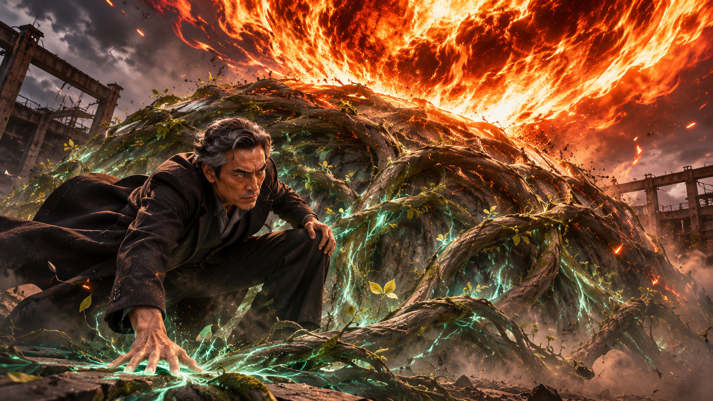
火光吞沒了整片視野。
地面劇烈震動。
木盾表面迅速炭化，外層枝幹接連崩裂。
但內部的藤蔓仍不斷生長，將破損的位置重新填補。
晉輝站在木盾後方。
左手維持著聖術。
右手則緩緩移向大衣內側。
冰晶仍在。
他抬頭望向木盾上方。
火焰逐漸散去。
炎君懸停在半空中。
「……居然擋住了？」
晉輝收回右手。
「火力不錯。」
炎君冷笑。
「少在那裡裝模作樣！」
他猛地向下俯衝。
晉輝卻早已動了。
木盾突然向兩側裂開。
數十條藤蔓從盾後衝出，沿著地面向外擴散。
炎君抬手一揮。
一道環狀火浪將迎面而來的藤蔓燒斷。
然而，更多藤蔓已經繞過他的兩側。
它們沒有直接攻擊。
而是迅速攀上附近的斷牆、石柱與地面。
炎君忽然察覺不對。
「……嗯？」
晉輝雙掌合攏。
四周的藤蔓同時收緊。
轟隆！
原本散落的石塊被拉動。
幾面斷牆在藤蔓牽引下傾倒，從不同方向朝炎君壓去。
炎君猛地向上躍起。
火焰從腳下噴發。
他剛衝出包圍，一條粗大的忘憂木藤便從上方橫掃而來。
砰！
炎君抬臂擋住。
但那條藤蔓並未停下。
第二條、第三條，接連從不同方向襲來。
炎君一邊閃避，一邊以火焰燒斷藤索。
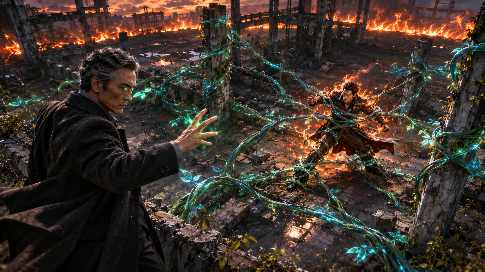
「煩死了！」
他雙手猛然合十。
掌心之間，一顆暗紅色的火球迅速壓縮。
晉輝目光微凝。
火球表面浮現數道細小裂紋。
下一瞬——
轟！
火球炸裂。
數道細長的火焰如箭矢般向四周射出。
藤蔓接連被擊穿。
其中幾道更直接朝晉輝飛來。
晉輝右手向上一抬。
地面猛然隆起。
一株忘憂木在他腳邊迅速生長。
樹幹膨脹、分裂。
粗壯的枝條沿著他的身體向外延伸。
轉眼間，一具高大的木質巨人已經將他包覆其中。
火箭撞上木巨人的胸前。
砰！砰！砰！
木屑四散。
外層枝幹被燒出數道焦痕。
晉輝站在木巨人的內部。
雙手緩緩張開。
木巨人的雙臂隨之抬起。
炎君抬頭望著那龐大的身影。
「……這又是什麼東西？」
晉輝沒有回答。
木巨人向前踏出一步。
地面震動。
下一瞬，巨大的拳頭猛然揮下。
炎君迅速側身。
拳頭砸進地面。
轟！
碎石飛散。
炎君借勢躍上木巨人的手臂。
火焰沿著掌心燃起。
他正準備向上衝刺，手臂表面的木質卻突然裂開。
數條細藤從裂縫中伸出。
炎君反應極快，立刻向後翻身。
但木巨人的另一隻手已經橫掃而來。
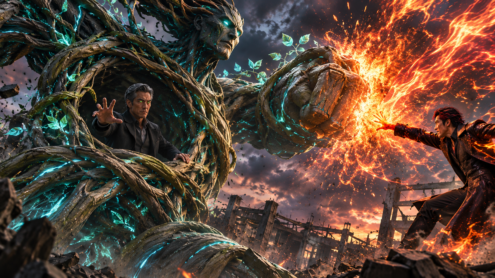
砰！
炎君雙臂交叉。
巨大的衝擊將他擊退數公尺。
他在地面滑出兩道焦黑的痕跡。
還沒站穩，晉輝已經再次出手。
木巨人的胸口向外裂開。
晉輝從其中躍出。
雙掌向前一推。
無數藤蔓自地底衝出。
它們彼此交錯，像一張迅速收攏的巨網，封住炎君左右兩側的退路。
炎君猛地抬頭。
「你以為這樣就能——」
話還沒說完。
其中一條藤索突然改變方向。
啪！
狠狠擊中他的腰側。
炎君整個人失去平衡。
下一秒，另一條藤蔓從側面掃來。
砰！
炎君被擊飛出去，重重撞上後方的斷牆。
轟隆！
整面牆壁崩塌。
塵土與碎石瞬間吞沒他的身影。
晉輝落回地面。
沒有追擊。
他站在原地，緩緩調整呼吸。
木巨人仍矗立在他身後。
四周的忘憂木藤，也沒有停止生長。
晉輝看著那片煙塵。
他的右手，再次伸進大衣。
握住冰晶。
片刻後。
煙塵裡傳來一聲輕笑。
「……呵。」
炎君從碎石間慢慢站起。
他拍掉肩上的灰塵。
嘴角仍帶著笑。
「不愧是首席至尊。」
「比我想像中還難纏。」
晉輝沒有回答。
炎君活動了一下脖子。
「不過……」
他的眼神逐漸變得銳利。
「你是不是忘了，我最擅長的就是燒東西？」
火焰從他腳下向外擴散。
周圍散落的藤蔓開始燃燒。
晉輝抬起左手。
忘憂木藤迅速向後收攏。
炎君卻已經衝了過來。
他的速度比剛才更快。
一拳直取晉輝面門。
晉輝側身閃避。
第二拳緊接而至。
晉輝抬掌格擋。
砰！
火焰炸開。
兩人同時退開半步。
炎君猛地轉身。
一道火鞭從側面掃來。
晉輝俯身閃過。
他左手按地。
一條藤蔓從炎君身後竄起。
炎君回頭的瞬間，晉輝已經向前踏出一步。
右手從大衣裡抽出。
冰晶在夕光下閃過一道寒芒。
炎君的目光瞬間落在那枚晶體上。
「……什麼？」
晉輝沒有停下。
他借著藤蔓牽制炎君的短暫空隙，猛然逼近。
右手直取胸口。
炎君迅速後退。
但腳下的藤蔓突然收緊。
他的動作慢了一瞬。
就是現在。
晉輝向前跨出最後一步。
冰晶猛然刺入炎君胸前。
咔！
一道清脆的聲音響起。
炎君整個人僵住。
火焰在瞬間停止流動。
冰晶內部的淡藍色光芒迅速擴散。
寒意沿著他的胸口向外蔓延。
手臂。
肩膀。
雙腿。
原本纏繞全身的火焰，竟在短短幾秒內逐漸熄滅。
連周圍的燃燒結界，都出現了細微的波動。
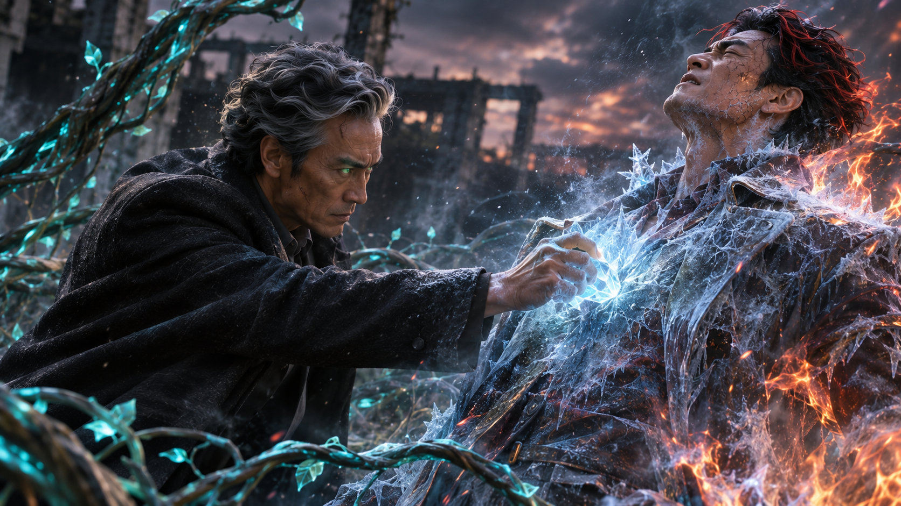
晉輝緊握冰晶。
目光沒有離開眼前的男人。
成功了？
炎君低著頭。
一動也不動。
然而。
下一秒。
「……呵。」
一聲輕笑，忽然從他喉間傳出。
晉輝眉頭一皺。
「……？」
炎君緩緩抬起頭。
臉上的笑容，變得有些陌生。
「哈哈……」
他的肩膀輕輕顫動。
「哈哈哈哈哈哈！」
笑聲越來越大。
晉輝的神情終於變了。
因為眼前那張臉，正在發生變化。
原本屬於炎君的五官逐漸失去原有的輪廓。
熟悉的眉眼、鼻樑與嘴角，像是被某種力量重新調整。
最後，露出另一張臉。
曾永華。
晉輝瞳孔猛然一縮。
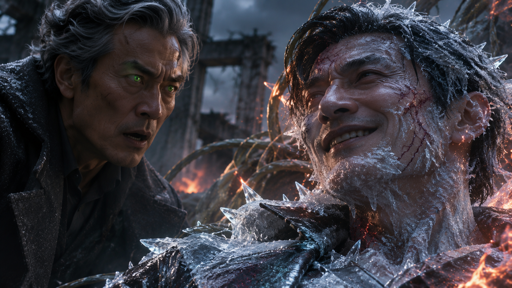
「……其他的魔君？」
曾永華抬起眼睛。
臉上掛著令人不安的笑容。
「哎呀……」
他低頭看了一眼胸前的冰晶。
「你還真是認真啊。」
晉輝立刻鬆開手。
向後退去。
但已經太遲了。
背後。
一道火光驟然亮起。
真正的炎君，早已出現在他身後。
「想我嗎？」
轟！
燃燒的拳頭狠狠擊中晉輝背後。
護身藤甲瞬間碎裂。
晉輝整個人被轟飛出去。
砰！
他撞上遠處的斷牆。
牆面崩裂。
大量碎石落下。
晉輝重重摔落地面。
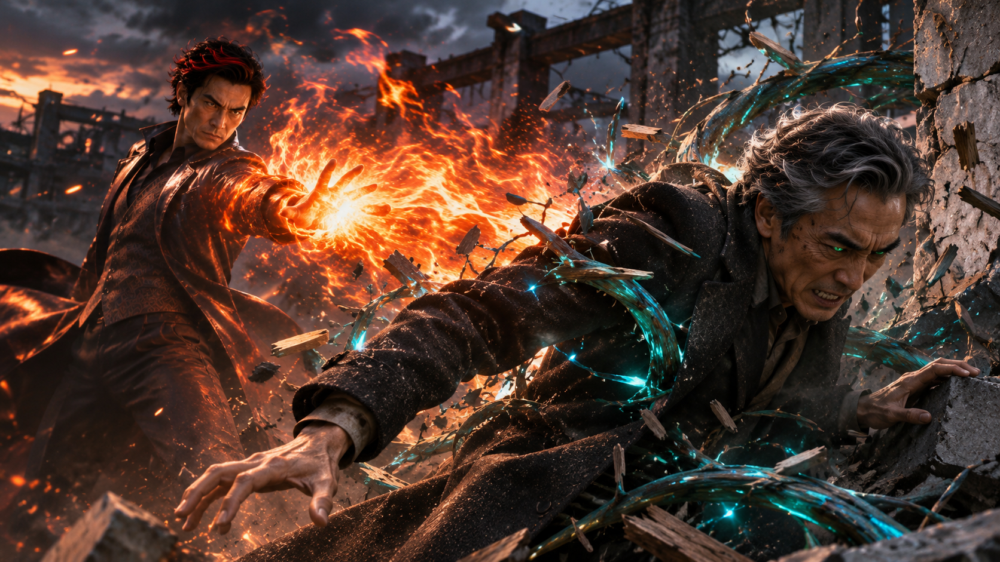
煙塵緩緩升起。
炎君站在原地。
甩了甩手上的火焰。
「首席至尊聖術師？」
他冷笑。
「也不過如此嘛。」
遠處的曾永華仍站在原地。
胸前的冰晶散發著寒氣。
他的動作已經逐漸僵硬。
但那張臉上，依然掛著笑容。
「鄭老師說得沒錯……」
他輕聲笑道。
「你們這些聖術師，還真容易為了重要的東西拚命呢。」
炎君瞥了他一眼。
「哼。」
隨後，他重新看向倒在廢墟中的晉輝。
「接下來……」
火焰沿著手臂重新燃起。
「該結束了。」
同一時間・前往郊區的道路
一輛深色休旅車沿著郊區道路疾駛。
梁景皓握著方向盤。
目光始終盯著前方。
副駕駛座上，景毅看了一眼時間。
「哥。」
「嗯？」
「我們已經開了快四十分鐘了。」
景皓沒有回答。
景毅望向窗外。
「你真的確定爸會在那裡？」
「我不確定。」
「……蛤？」
「但那個地址，我很熟。」
景皓稍微放慢車速，轉入另一條道路。
「小時候，爸常常帶我去那裡練習聖術。」
景毅轉頭看他。
「練功？」
「嗯。」
「我怎麼不知道？」
景皓沉默了一下。
「因為那個地方，只有我跟爸知道。」
景毅沒有再說話。
景皓望著前方。
「我不知道是誰送來那張紙鷹。」
「但如果爸真的打算一個人去做什麼……」
他握緊方向盤。
「我想，他很可能會選那個地方。」
景毅靠回椅背。
「……希望你猜對了。」
他望向窗外。
「不然我們現在可能正在往完全相反的方向跑。」
景皓沒有回應。
就在這時。
後座傳來輕輕的碰觸。
景毅回過頭。
瑞恩伸手拍了拍他的肩膀。
接著指向窗外。
景毅順著她指的方向望去。
遠方的天空，隱隱泛著異常的紅光。
那不是夕陽。
一道巨大的火焰結界，正籠罩著遠處的廢墟。
景毅的表情瞬間變了。
「……哥。」
景皓也看見了。
他踩下油門。
「我看到了。」
郊區・火焰結界外
五分鐘後。
休旅車停在一條荒廢道路旁。
三人迅速下車。
穿過一小片樹林後，眼前的景象讓他們同時停下腳步。
巨大的火焰結界，將整片廢墟包圍其中。
火光沿著結界表面緩緩流動。
即使隔著一段距離，仍能感受到迎面而來的熱浪。
景毅抬頭望著。
「……這也太誇張了吧。」
景皓沒有說話。
他望向結界深處。
看不清裡面的情況。
「爸……」
景毅向前一步。
「我先試試。」
他抬起右手。
黑金色的長槍術器隨即出現在掌中。
聖術沿著術器延伸。
一道強勁的力量猛然撞向結界。
砰！
火焰表面劇烈震動。
然而，下一秒，一股反震力便將景毅逼退。
他踉蹌兩步，重新站穩。
「……可惡。」
瑞恩走到他身旁。
她抬起手。
黑金色畫筆在掌心凝聚成形。
筆尖微微發亮。
瑞恩向前揮動。
一道由聖術形成的水波朝結界推去。
水波撞上火焰。
滋——！
大量白霧瞬間升起。
但結界只短暫波動了一下，便恢復原狀。
瑞恩皺起眉。
她低頭看著手中的畫筆。
景毅咬緊牙關。
「不行……」
他抬頭望向結界。
「這東西根本不讓我們進去。」
景皓站在一旁。
始終沒有說話。
他的目光越過火焰，望向深處。
那裡，隱隱傳來聖術碰撞的震動。
他突然向前走去。
「哥？」
景毅回頭。
景皓沒有停下。
他握緊拳頭。
朝結界猛然揮出一拳。
然而——
沒有碰撞。
沒有反震。
甚至沒有任何阻力。
景皓整個人直接穿過火焰。
因為失去預期中的支撐，他向前踉蹌了一步。
隨即站穩。
「……？」
景皓回頭。
景毅愣在原地。
「……蛤？」
瑞恩也睜大眼睛。
景皓看了看自己的雙手。
又看向身後的火焰。
他伸手輕輕碰觸結界。
手掌竟再次穿了過去。
景毅立刻上前。
「等等，我也——」
砰！
他再次被結界擋住。
「……不是吧？」
景毅抬頭看著哥哥。
「為什麼只有你可以？」
景皓也不知道。
但他沒有時間思考。
結界深處，再次傳來一聲沉悶的震動。
景皓猛地轉頭。
瑞恩立刻抬起雙手。
「快去。」
景皓看向她。
瑞恩神情堅定。
再次比出手語。
「我們會想辦法。」
景毅也點頭。
「哥，你先去！」
他重新握緊術器。
「把老爸帶回來！」
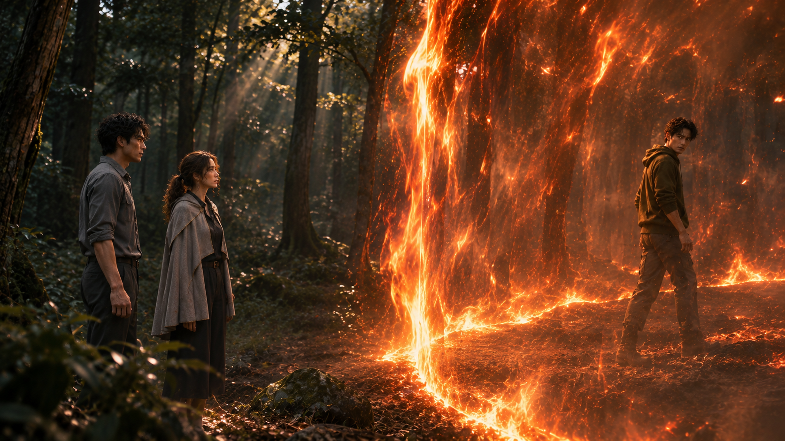
景皓望著兩人。
片刻後，點了點頭。
「……好。」
他轉過身。
朝火焰深處飛奔而去。
火焰結界內
廢墟裡，煙塵尚未散去。
晉輝扶著斷牆，勉強站起身。
他的呼吸已經變得沉重。
大衣背後留下一片焦黑的痕跡。
護身的忘憂木藤甲正在緩緩重新生長。
但速度明顯比剛才慢了許多。
炎君站在不遠處。
「喔？」
他歪了歪頭。
「還能站起來啊？」
晉輝沒有回答。
他抬起左手。
幾條藤蔓從地底竄出。
炎君卻只是冷笑。
「同一招，還想用幾次？」
他猛然向前衝去。
火焰在腳下爆開。
晉輝立刻操控藤蔓迎擊。
然而，炎君的速度比先前更快。
他一拳擊碎迎面而來的木藤。
緊接著轉身。
另一道火焰從側面掃來。
晉輝勉強閃過。
腳下卻突然失去平衡。
炎君已經逼近。
「太慢了！」
砰！
燃燒的拳頭擊中晉輝的護甲。
木藤瞬間炸裂。
晉輝被迫後退。
他抬起右手。
一面木盾迅速在身前成形。
炎君卻猛地改變方向。
從側面繞過木盾。
下一瞬，一道火刃在掌中凝聚。
晉輝察覺時，已經來不及完全轉身。
火光猛然逼近。
他身後的護身藤甲立刻收緊。
但仍無法完全擋下這一擊。
晉輝整個人猛地一震。
雙膝幾乎失去支撐。
炎君站在他身後。
聲音低沉。
「你以為……」
他緩緩靠近。
「這樣就能贏我？」
晉輝咬緊牙關。
右手仍試圖凝聚聖術。
一條細藤從地面竄起。
炎君抬腳踩住。
啪。
藤蔓斷裂。
「真是頑強啊。」
炎君冷笑。
「都這樣了，還想打？」
晉輝勉強抬起頭。
「……你們……」
他的聲音有些沙啞。
「休想……」
炎君沒有讓他說完。
他抬起另一隻手。
火焰開始向掌心匯聚。
一團明亮的火球逐漸形成。
熱浪向四周擴散。
晉輝抬頭望著那團火焰。
他想再次召喚忘憂木。
但腳下的藤蔓才剛生長，便被高溫逼得蜷縮。
炎君望著他。
「首席至尊。」
他露出笑容。
「到此為止了。」
火球緩緩升起。
「慧萍...我來了...」
晉輝閉了一下眼。
下一秒。
炎君猛然揮手。
就在火焰即將落下的瞬間——
轟！
一道強烈的衝擊，突然從側面襲來。
炎君的身體猛地一震。
「什——」
話還沒出口。
整個人便被狠狠擊飛出去。
砰！砰！
他接連撞斷幾棵焦黑的枯樹。
最後重重墜落在遠處的地面。
火焰四散。
煙塵翻湧。
晉輝怔住。
他勉強抬起頭。
遠處的塵霧中。
一道身影緩緩走來。
那人穿著深綠色帽T。
黑色短髮被熱風吹得微微凌亂。
他停在晉輝前方。
目光始終望著炎君墜落的方向。
沒有回頭。
也沒有立刻查看父親的傷勢。
只是緩緩握緊拳頭。
「……離我爸遠一點。」
晉輝望著那道熟悉的背影。
嘴唇微微動了一下。
「……龍兒？」
梁景皓站在父親身前。
沒有退開。
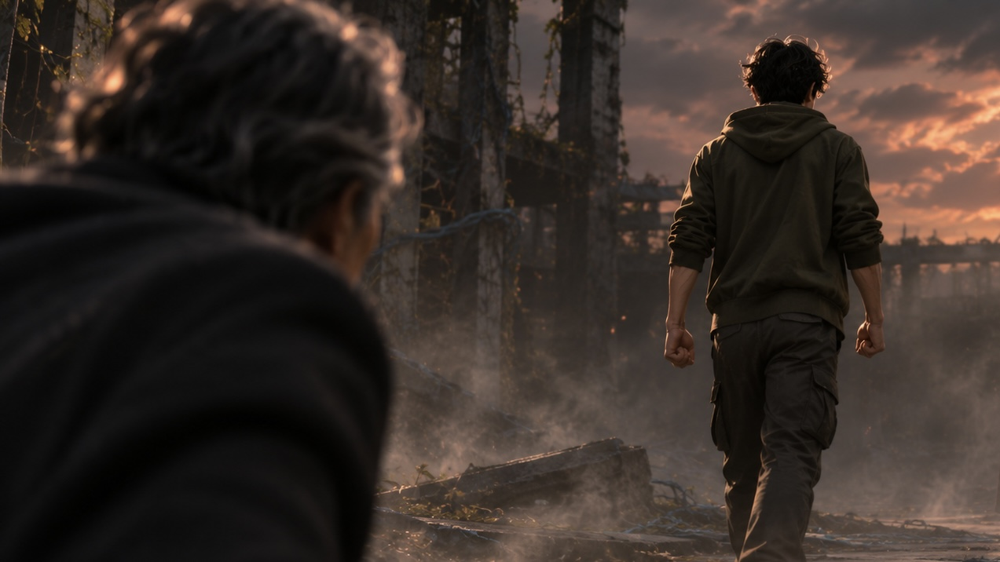